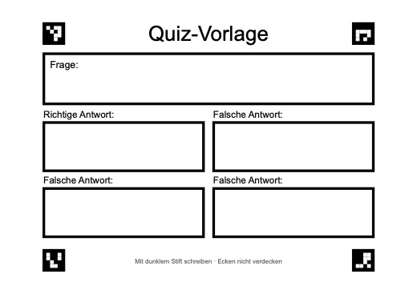
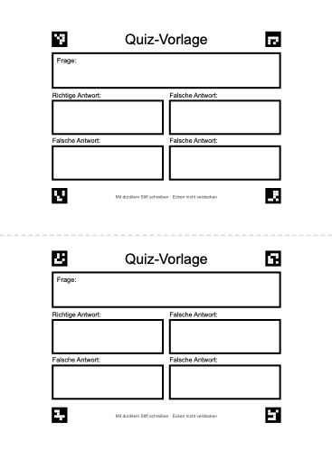
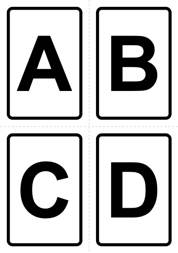
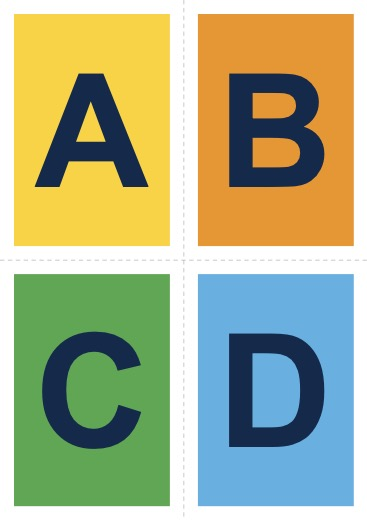
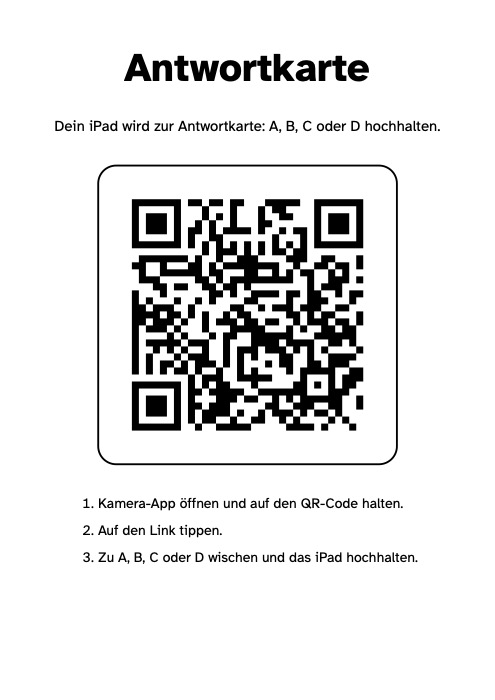

Fotografiere eine oder mehrere ausgefüllte Fragekarten. Die App erkennt die vier Eckmarken automatisch.




0 Fragen
Tippen zum Schließen

Zeigt einen QR-Code für die Tafel. Die Schüler scannen ihn mit dem iPad und sehen dann nur die Seiten A, B, C und D zum Durchwischen.
© 2026 Walteroelf · Work in Progress · CC BY-NC-SA 4.0
Mit der Kamera scannen, dann zu A, B, C oder D wischen und das iPad hochhalten.